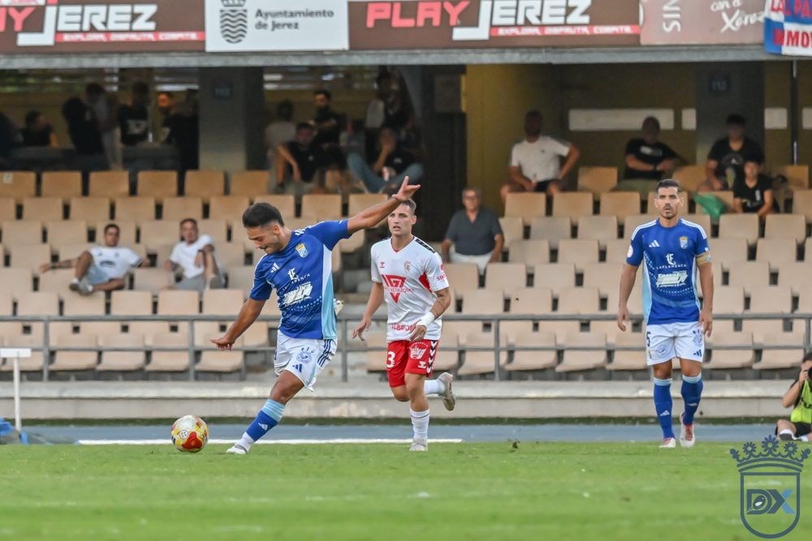

Antoniano have Xerez's number: three wins in the last four meetings

Photo: Diario XerecistaXerez CD host Atlético Antoniano on Sunday 15 November at 18:00 at the Pedro Garrido. Antoniano have beaten them in three of the last four meetings, although this time they arrive in the lower reaches of the table.
The recent record between the two sides clearly favours the Lebrija club. In the last four games, all in Segunda Federación, Antoniano have three wins and Xerez one, with six goals for Antoniano and four for the blue-and-whites.
Two defeats in 2024/25
The 2024/25 season ended without a point for Xerez against this opponent. On 6 October 2024 they lost 1-0 at the Estadio Municipal de Lebrija, and on 16 February 2025 they were beaten 1-2 at home.
One win and one defeat in 2025/26
Last season Xerez ended the run on 14 September 2025 with a 2-0 home win. In the second half of the season, on 25 January 2026, Antoniano won again, 3-2 at the Estadio Municipal de Lebrija. It was the last meeting between the two.
Two teams at different moments
This time the two sides arrive on opposite paths. Xerez are fifth, in the play-off places, with 15 points, after a 0-4 win over Atlético Sanluqueño at El Palmar. Antoniano are sixteenth, in the relegation zone, with 6 points. They have scored 10 goals and conceded 19, the second-worst defence in the group.
At home, Xerez have 7 points from five games. It will be their first official home game at the Pedro Garrido, because of the reseeding work on the Chapín pitch.
🇪🇸 Leer en español ← Back to home